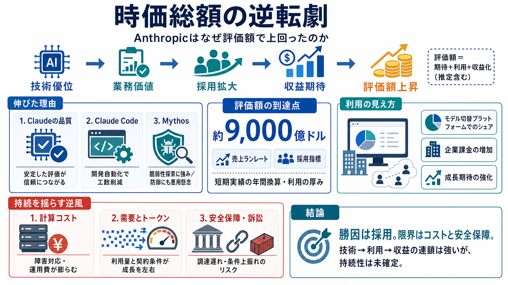

How Anthropic Got So Big, So Fast - The New York Times
https://www.nytimes.com/2026/05/29/business/dealbook/anthropic-ai-openai.html. [SKIP ADVERTISEMENT](https://www.nytimes.…

時価総額の逆転劇
なぜAI企業アンソピック（Anthropic）は時価総額でOpenAIを上回ったのか。数字（成長指標）と、長続きさせる障壁（コスト・安全保障）をセットで整理します。
なぜ“結果”が出た？
時価総額は、資金調達額・売上見通し・利用の伸び・成長期待を総合して市場が織り込むものです。だから記事は、物語ではなく「売上ランレート」「採用指標」に寄せて説明しています。
9,000億ドル到達
記事の軸は、Anthropicの評価額が約9,000億ドルに到達し、OpenAIを上回った点です。上昇は「推定売上」と「採用の広がり」を背景に描かれています。
技術→採用→収益
Anthropicの上昇は、技術的な強みが「業務価値」に変換され、採用が広がり、収益化が見える――という因果で説明されています。
品質評価の継続
Claudeモデルは品質評価で継続的に支持されている、と記事は位置づけています。ここが土台となり、採用（導入）と利用の継続につながる描き方です。
コード生成の実装
Claude Codeの進化は、ソフト開発の自動化を強め、採用の拡大を促す要素として挙げられます。技術がそのまま工数削減に結びつきやすい領域です。
攻撃にも近い
Mythosモデルはサイバー脆弱性の探索に長けるとされ、政府・企業の警戒を招くほど能力が高い、と記事は描きます。性能が“採用の理由”にも“安全上の懸念”にも同時に作用します。
勝ち方の特徴
記事では、OpenRouterのように「モデルを切り替えて使う」プラットフォーム上のシェアや、企業の課金・利用状況といった指標でもAnthropicが優勢に見える点を挙げています。評価額は“使われ方”に反応しやすいからです。
優位性を揺らす
強い成長ストーリーがあっても、障害対応で大量の計算資源が必要になり、費用が巨額化し得ます。さらにAI利用は大量のトークンを要し、企業側が支出を締めると成長が鈍る可能性があります。
安全保障の論点
国防総省との関係が「国家安全保障上のサプライチェーンリスク」とされ、法廷争いになっていると記事は述べます。技術優位だけでは解けない制約になり得る点が重要です。
IPO前提の圧力
両社は大型IPOを見据えており、投資家資金が有限である可能性があるため、「どちらに賭けるか」が競争課題になります。成長の数字は、技術だけでなく資本市場の期待にも強く結びつきます。
結論：数字と逆風
Anthropicの評価額上振れは、性能と採用の連鎖（品質、Claude Code、Mythosの用途）で説明されます。一方で、計算コスト・安全保障の摩擦・トークン需要制約が、優位性の“持続”を保証しない——これが記事のバランスです。
https://www.nytimes.com/2026/05/29/business/dealbook/anthropic-ai-openai.html. [SKIP ADVERTISEMENT](https://www.nytimes.…
Anthropic, which was founded in 2021, earned its first dollar in revenue about three years ago. It is now on the verge o…
* [World](https://www.reuters.com/world/). ## [Browse World](https://www.reuters.com/world/). * [Africa](https://www…
[Skip to content](https://tech-insider.org/anthropic-vs-openai-2026#main). ![Image 3](https://tech-insider.org/wp-conten…
Anthropic's valuation surged to $965 billion in its latest funding round, overtaking rival OpenAI, as the startup aims t…